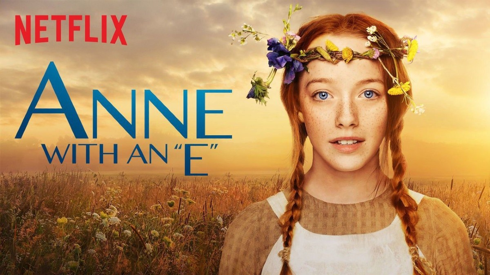
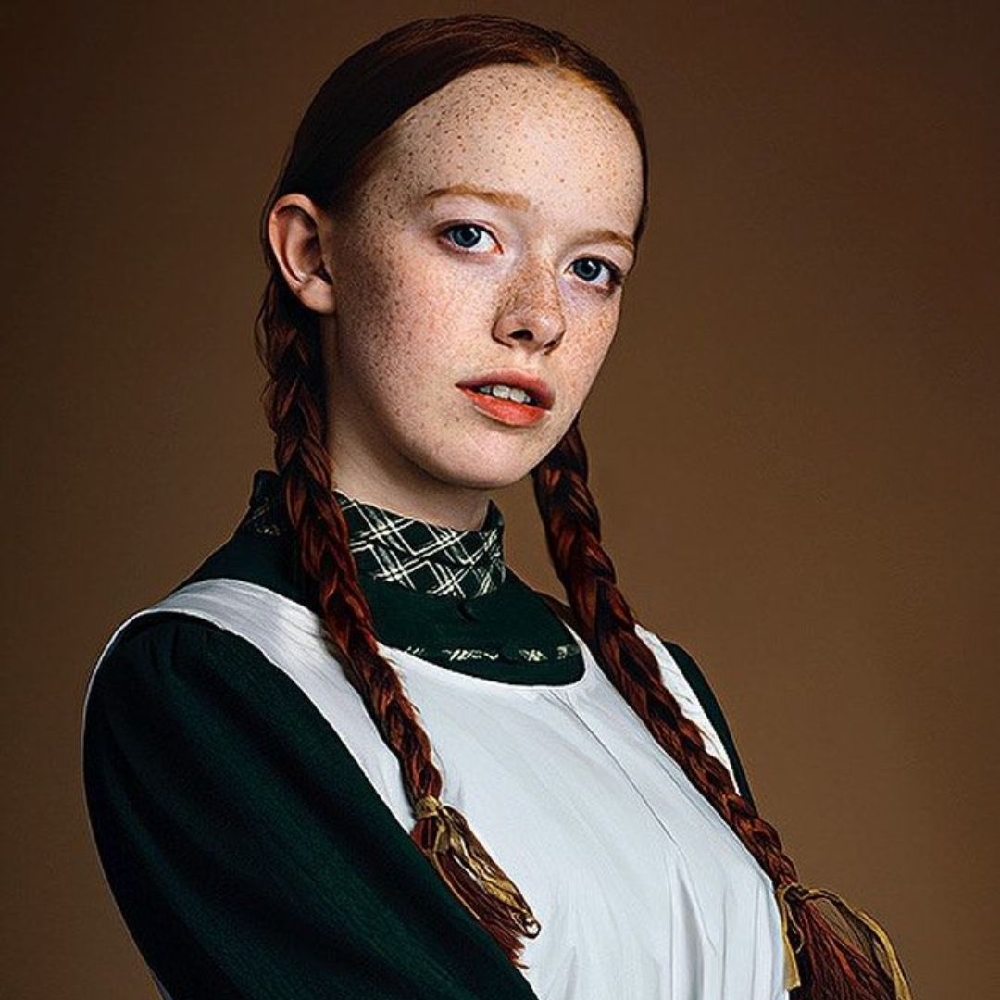
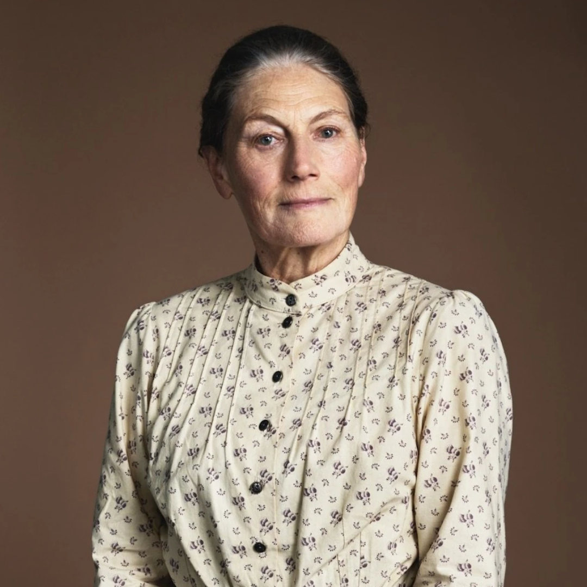
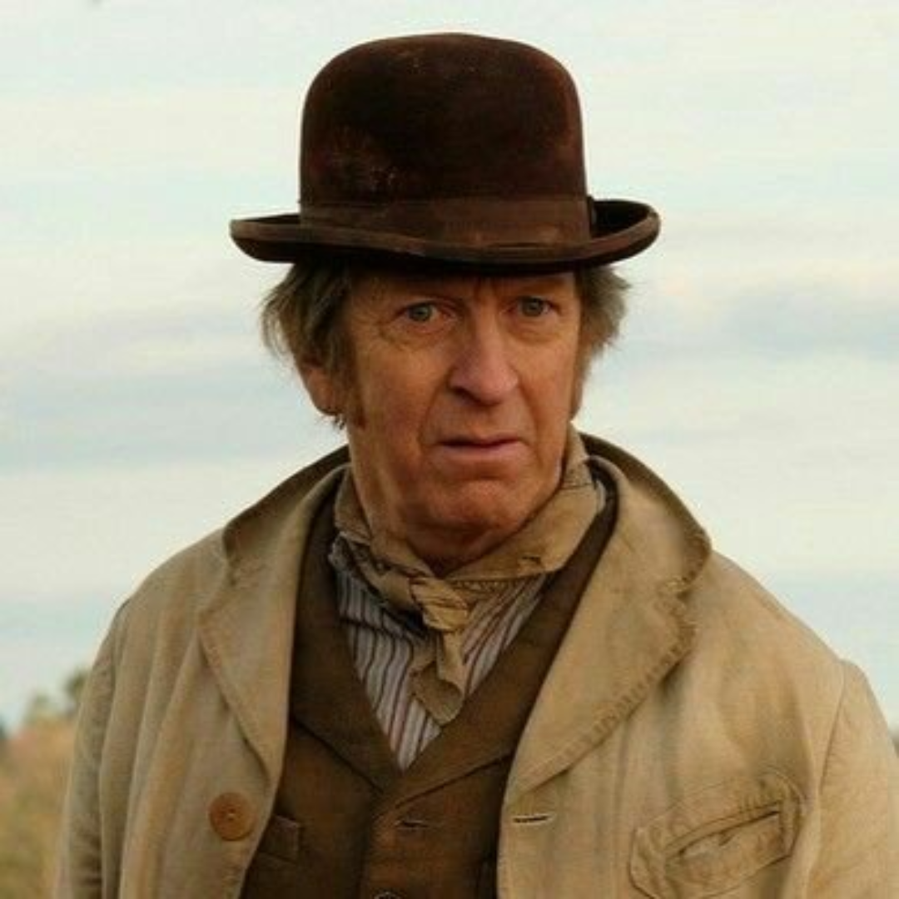

A finales del siglo XIX, dos hermanos, Matthew y Marilla Cuthbert, deciden adoptar a un niño huérfano para que les ayude en su granja de Green Gables, situada en el pueblo de Avonlea (Canadá). Sin embargo, por un error en el orfanato, en su lugar envían a Anne Shirley, una niña de 13 años.
Aunque al principio Marilla duda en aceptarla debido a que esperaban a un muchacho, y la comunidad muestra reticencias, el espíritu vivaz, la gran inteligencia y la inagotable imaginación de Anne terminan por transformar no solo la vida de los Cuthbert, sino la de todo el pueblo.
| Dato | Detalle |
|---|---|
| Género |
|
| Creado por | Moira Walley-Becket |
| Basado en | Ana la de Tejas Verdes de Lucy Maud Montgomery |
| Primera emisión | 19 de marzo de 2017 |
| Última emisión | 24 de noviembre de 2019 |
| Idioma original | Inglés |
| Temporadas | 3 |
| Episodios | 27 |
| País de origen | Canadá |

Anne Shirley

Marilla Cuthbert

Matthew Cuthbert
Gilbert Blythe